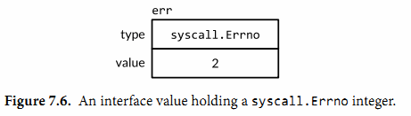

7.8. error接口
从本书的开始，我们就已经创建和使用过神秘的预定义error类型，而且没有解释它究竟是什么。实际上它就是interface类型，这个类型有一个返回错误信息的单一方法：
type error interface {
Error() string
}
创建一个error最简单的方法就是调用errors.New函数，它会根据传入的错误信息返回一个新的error。整个errors包仅只有4行：
package errors
func New(text string) error { return &errorString{text} }
type errorString struct { text string }
func (e *errorString) Error() string { return e.text }
承载errorString的类型是一个结构体而非一个字符串，这是为了保护它表示的错误避免粗心（或有意）的更新。并且因为是指针类型*errorString满足error接口而非errorString类型，所以每个New函数的调用都分配了一个独特的和其他错误不相同的实例。我们也不想要重要的error例如io.EOF和一个刚好有相同错误消息的error比较后相等。
fmt.Println(errors.New("EOF") == errors.New("EOF")) // "false"
调用errors.New函数是非常稀少的，因为有一个方便的封装函数fmt.Errorf，它还会处理字符串格式化。我们曾多次在第5章中用到它。
package fmt
import "errors"
func Errorf(format string, args ...interface{}) error {
return errors.New(Sprintf(format, args...))
}
虽然*errorString可能是最简单的错误类型，但远非只有它一个。例如，syscall包提供了Go语言底层系统调用API。在多个平台上，它定义一个实现error接口的数字类型Errno，并且在Unix平台上，Errno的Error方法会从一个字符串表中查找错误消息，如下面展示的这样：
package syscall
type Errno uintptr // operating system error code
var errors = [...]string{
1: "operation not permitted", // EPERM
2: "no such file or directory", // ENOENT
3: "no such process", // ESRCH
// ...
}
func (e Errno) Error() string {
if 0 <= int(e) && int(e) < len(errors) {
return errors[e]
}
return fmt.Sprintf("errno %d", e)
}
下面的语句创建了一个持有Errno值为2的接口值，表示POSIX ENOENT状况：
var err error = syscall.Errno(2)
fmt.Println(err.Error()) // "no such file or directory"
fmt.Println(err) // "no such file or directory"
err的值图形化的呈现在图7.6中。

Errno是一个系统调用错误的高效表示方式，它通过一个有限的集合进行描述，并且它满足标准的错误接口。我们会在第7.11节了解到其它满足这个接口的类型。